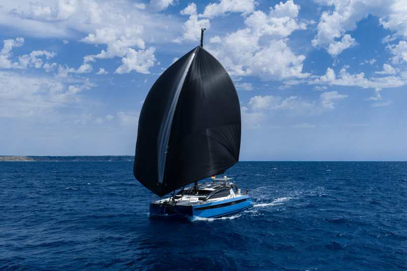

The open sea does not hurry. Neither should the cruising sailor.
A great passage begins not at the harbour mouth but at the chart table, hours or days before the lines are cast off. Passage planning is the navigator's meditation: tracing potential routes across the chart, probing tidal atlases for gate windows, consulting pilot books for anchorage depths, and squinting at synoptic forecasts for the window of favourable pressure that will carry you across the bay without drama.
With Orca, this ritual moves into the digital domain without losing its depth. Plot your intended route on the chart, set timed waypoints at tidal gates, and invoke the weather routing engine. Within seconds, the app proposes an alternative track — perhaps a small detour west to exploit a developing sea breeze on the third leg, arriving at the headland at slack water rather than battling a two-knot foul tide. The difference between a comfortable passage and an exhausting one often lies in these invisible adjustments.
Every waypoint in Orca can carry metadata: a note reminding the crew of a charted shoal nearby, a reminder to call the harbour master on VHF 37, or a fuel waypoint with the marina's lat/lon pre-loaded. The passage plan becomes a checklist, a logbook and a briefing document in one — shared instantly to every crew member's phone via the app's synchronisation feature.

The cruising sailor does not fight the weather; they negotiate with it. A westbound Atlantic passage waits in the Azores High; a Baltic crossing times itself between the summer depressions that queue like freight trains from the west. The discipline of weather-waiting — nursing a cup of coffee in a snug harbour while the sky outside churns — is as integral to cruising as any seamanship skill.
Orca's weather display presents wind, wave, tide and current forecasts in layered overlays on the chart. Select a date and time slider and watch the forecast evolve: the isobars tighten and relax, the wind barbs shift direction, the wave-height colour field pales as the swell decays behind a departing low. The navigator can fast-forward 24, 48 or 72 hours to survey the entire weather window before committing to departure.
Tap any point on your planned route and Orca shows the wave height, wave period and swell direction forecast at that exact position for the time you expect to pass it. For a 400-mile offshore passage, you can preview what the sea state will look like at the midpoint on the third night — before you leave the marina. Few tools offer this level of anticipatory intelligence.
Offshore passages spanning multiple days require understanding of synoptic-scale patterns: the motion of fronts, the rotation of highs, the notorious acceleration of depressions over warm sea surface temperatures. Orca integrates ECMWF medium-range data alongside the high-resolution regional models, offering a five-day window that balances long-range awareness with near-term precision. The discrepancy between models — where they agree and where they diverge — itself communicates forecast confidence.
The best anchorages are the ones the pilot book calls "uncomfortable in westerly swell" — because that is exactly where the fleet will not be. Finding them requires reading the chart with the same intimacy as a local fisherman: understanding that the contour line curving in behind the headland promises shelter, that the sandy patch ringed by kelp symbols holds an anchor better than the rock garden beyond it.
Orca's chart layer system allows the navigator to overlay tidal height predictions on the depth soundings — crucial when choosing an anchorage for a drying tidal range of three metres. The depth colour coding shifts in real time as tidal height changes, revealing which areas will drain to mud at low water and which retain swinging room throughout the tide. Smart depth alerts warn if the anchor rode scope becomes dangerously taut relative to the charted depth.
Marina approach planning integrates seamlessly: drop a waypoint on the marina berth, and Orca calculates ETAs accounting for tidal stream through the approach channel. A harbour master's VHF channel note in the waypoint description ensures the radio call is made at the right moment — not fumbled at the last second while threading between fishing boats at the entrance.
There is a specific species of peace that belongs only to the night watch: the boat moving steadily through darkness, the bow wave phosphorescing green-white beneath you, the constellations wheeling slowly overhead. The off-watch crew sleep below; the world belongs to the person standing helm. This is why people sail offshore — not to arrive, but to exist in this particular quality of solitude.
Night passages demand a different standard of preparation. Every crew member receives a watch briefing before darkness: waypoints to pass, traffic separation schemes to honour, lights to identify, hazards to avoid. The Orca passage plan, printed or displayed on the tablet at the chart table below, becomes the crew's shared intelligence. The watch-keeper on deck knows that the next waypoint is 23 miles ahead and bears 042°; the expected shipping lane crossing is in four hours; a fishing fleet is charted ten miles to the south.
The Orca Display 2, mounted at the companionway in its waterproof bracket, displays the route in night mode. Cross-track error shows as a numerical value and a visual bar — the watch-keeper adjusts course to keep the boat on the thread without needing to interpret a complex chart in darkness. An automated waypoint alarm sounds when the boat approaches within a configurable distance, waking the navigator if needed and triggering a course alter to the next leg.
As dawn greys the eastern horizon and the lighthouse that marked a distant headland fades into daylight, the passage reveals itself in retrospect as something achieved without drama — which is, of course, the quiet triumph of good preparation. The sea had its opportunities; the navigator denied them.